Guía 1111: LibreOffice Calc¶
|
|

Exploración Estructuración Actividad práctica Transferencia
Temática: LibreOffice Calc.
Objetivo de aprendizaje: Usar de forma básica el software LibreOffice Calc.
DESEMPEÑO: Emplea correctamente las funcionalidades de LibreOffice Calc para la creación y edición de hojas de cálculo, aplicando formatos de celda, fórmulas y herramientas de edición de manera eficaz. Comprende las diferencias técnicas y de compatibilidad entre LibreOffice Calc y Microsoft Excel, seleccionando adecuadamente la herramienta según el contexto de trabajo.
Componente: Uso y apropiación de la T&I.
Competencia: Genero propuestas innovadoras para el uso y aprovechamiento de productos tecnológicos.
Evidencia de aprendizaje: Utilizo adecuadamente herramientas informáticas para la búsqueda, organización, procesamiento, sistematización, comunicación y difusión de ideas.
Actividades desarrolladas en su totalidad.
Participación en clase.
Explicación clara de conceptos.
Argumentación de ideas.
Cumplimiento de las reglas del aula.
Mensaje del autor¶
“En esta guía, los estudiantes adquieren aprendizajes en el uso de LibreOffice Calc, una herramienta de hoja de cálculo de código abierto. A través de una serie de actividades prácticas, los alumnos aprenderán a organizar, analizar y visualizar datos mediante herramientas de formato. Además, se busca que comprendan las diferencias clave entre LibreOffice Calc y Microsoft Excel, fomentando la capacidad de elegir la herramienta adecuada según las necesidades de compatibilidad, costos y complejidad de las tareas, garantizando así una autonomía técnica en la gestión de documentos ofimáticos”.
—Camilo Fonseca
LibreOffice Calc¶
LibreOffice Calc es una aplicación de hoja de cálculo gratuita y de código abierto que forma parte de la suite ofimática LibreOffice. Es una herramienta para organizar, analizar y almacenar datos en formato de tabla. Calc se utiliza para las siguientes tareas:
Creación y edición de presupuestos, facturas y otros documentos financieros.
Seguimiento de inventario y ventas.
Gestión de cronogramas y tareas de proyectos.
Realizar análisis estadístico.
Creación de gráficos y tablas para visualizar datos.
Calc es compatible con el formato OpenDocument (ODF), un estándar abierto para documentos de oficina. También permite abrir y guardar hojas de cálculo en formato Microsoft Excel, lo que lo convierte en una excelente opción para quienes necesitan compartir archivos con otros usuarios de Excel.
LibreOffice Calc se puede ejecutar en varios sistemas operativos como Windows, GNU/Linux y MACOS. Esto facilita la portabilidad entre diferentes sistemas de los documentos generados.
A continuación se muestra un ejemplo de una hoja de cálculo creada en LibreOffice Calc.

LibreOffice Calc¶ |
Características de LibreOffice Calc¶
Un uso profesional de la hoja de cálculo requiere el manejo de herramientas para análisis de datos y generación de gráficas.
LibreOffice Calc permite configurar lo siguiente:
Definir y modificar estilos de celda para aplicar formatos con elegancia y productividad.
Uso de formulación teniendo en cuenta los nombres de intervalos de celdas.
Uso del asistente de funciones, y una exploración sobre sus diferentes tipos para sumar y contar, manipular textos o fechas, encontrar valores dentro de tablas de datos y aplicar la lógica para mostrar resultados alternativos en las celdas.
Anidar funciones que se pueden usar de forma combinada dentro de una misma fórmula.
Establecer formatos condicionales para resaltar conjuntos de celdas que cumplan determinados criterios, así como mejorar la presentación de ciertos valores con el uso automatizado de iconos, barras de datos y escalas de color.
Planificación de proyecciones de datos mediante las herramientas de solución y búsqueda del valor destino.
Trabajar con tablas dinámicas para analizar y resumir grandes cantidades de datos.
Proteger documentos de diferentes formas.
Personalizar la interfaz, configurando y modificando menús, barras de herramientas y atajos de teclado.
La siguiente imagen muestra un resumen gráfico de las características de LibreOffice Calc.
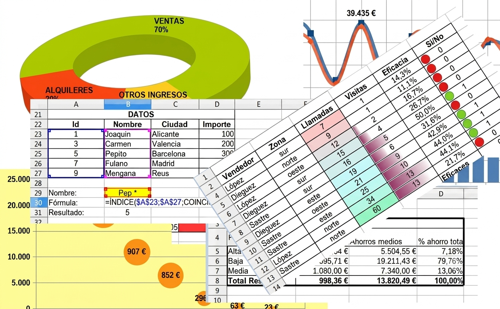 Herramientas LibreOffice Calc¶ |
{kind=link}
OpenDocument (ODF)
ODF, también referido como OpenDocument, es un formato de archivo abierto y estándar para el almacenamiento de documentos ofimáticos tales como hojas de cálculo, textos, gráficos y presentaciones.
Las especificaciones iniciales fueron elaboradas por la compañía Sun Microsystems, y posteriormente fueron desarrolladas y complementadas por el comité técnico para Open Office XML de la organización OASIS. OpenDocument fue publicado como estándar OASIS el 1 de mayo de 2005.
Las extensiones al nombre de archivo identificativas de los archivos OpenDocument incluye:
odt para documentos de texto.
ods para hojas de cálculo.
odp para presentaciones.
odg para gráficos.
odb para bases de datos.
Abrir documentos en LibreOffice Calc
Para abrir un documento de Calc se cuenta con las siguientes opciones:
Desde el menú *Archivo > Abrir.
Utilizando la combinación de teclas CTRL + O (también funciona CTRL + A)
Desde el botón Abrir de la barra de herramientas Estándar.
Una vez hecho esto se genera un cuadro de diálogo. Debe moverse por la estructura de directorios hasta encontrar el archivo deseado. Dicho archivo se selecciona y PULSAR el botón Abrir.
Se pueden abrir documentos existentes desde una gran variedad de formatos. Los formatos son:
Hoja de Cálculo ODF (*ods) formato nativo para OpenOffice Calc.
Plantilla de Hoja de cálculo ODF (*.ots)
XML de Microsoft Excel 2007-2013 (*.xlsx)
Microsoft Excel 97-2003 (*.xls, *.xlc, *.xlm, *.xlw, *.xlk, *.et)
Plantilla de Microsoft Excel 97-2003 (*.xlt, *.ett)
Texto CSV (*.csv)
Interfaz de LibreOffice Calc¶
LibreOffice Calc tiene la siguiente interfaz:

LibreOffice Calc¶ |
Diferencia entre LibreOffice Calc y Microsoft Excel¶
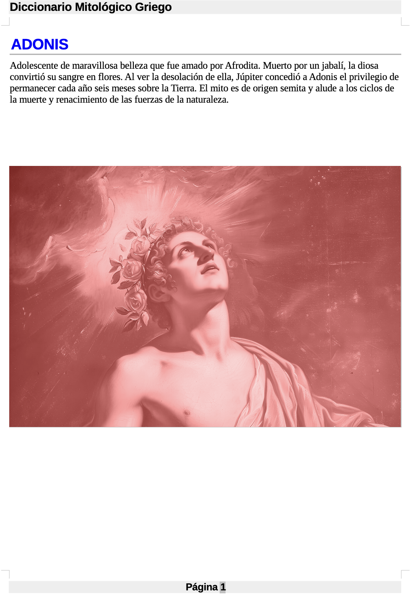 LibreOffice Calc¶ |
{kind=link}
Excel es un programa de hojas de cálculo desarrollado por Microsoft. Es uno de los más populares del mundo y lo utilizan millones de personas para diversas tareas, entre ellas:
Creación y edición de presupuestos, facturas y otros documentos financieros
Seguimiento de inventario y ventas
Gestión de cronogramas y tareas de proyectos
Realizar análisis estadístico
Creación de gráficos y tablas para visualizar datos
Excel es conocido por su facilidad de uso. Ofrece una amplia gama de funciones y herramientas para trabajar con datos, lo que lo convierte en una herramienta versátil para usuarios de todos los niveles.
A continuación se muestra una tabla comparativa de características entre LibreOffice Calc y Microsoft Excel:
Característica |
LibreOffice Calc |
Microsoft Excel |
|---|---|---|
Precio |
Software libre y de código abierto |
Producto comercial |
Sistemas operativos |
Windows, macOS, Linux |
Windows, macOS, iOS, Android |
Formatos de archivo |
ODF, Excel, CSV, TXT y muchos más |
Excel, CSV, TXT y muchos más |
Características |
Conjunto completo de funciones de hoja de cálculo, que incluye funciones, fórmulas, gráficos y herramientas de análisis de datos. |
Conjunto completo de funciones de hoja de cálculo, que incluye funciones, fórmulas, gráficos, herramientas de análisis de datos y funciones más avanzadas como minería de datos y macros integradas. |
Compatibilidad |
Compatible con una amplia gama de formatos de archivo, incluidos los formatos ODF y Excel |
El programa de hoja de cálculo más utilizado en el mundo empresarial, por lo que puede resultar más fácil compartir archivos de Excel con otros. |
Experiencia de uso |
LibreOffice Calc es una buena opción para principiantes, ya que es fácil de usar y tiene una interfaz intuitiva. También es una buena opción para quienes necesitan un potente programa de hojas de cálculo sin tener que pagar por un producto comercial. Sin embargo, Calc podría no ser adecuado para quienes necesiten usar funciones más avanzadas o compartir archivos con usuarios que solo usan Excel. |
Excel es una buena opción para quienes necesitan un potente programa de hojas de cálculo con una amplia gama de funciones. También es una buena opción para quienes necesitan compartir archivos con otros usuarios de Excel. Sin embargo, Excel es un producto comercial y puede resultar demasiado caro para algunos usuarios. |
¿En que casos usar LibreOffice Calc o Microsoft Excel?
Si bien Excel es ampliamente utilizado, su costo puede ser un obstáculo, lo que convierte a LibreOffice Calc en una alternativa gratuita muy atractiva. La comparación abarca las características, el precio y la experiencia de usuario, destacando las ventajas y desventajas de cada una. En definitiva, la elección depende de las necesidades individuales, por lo que es importante considerar factores como el presupuesto, las necesidades de colaboración y la complejidad de las tareas al seleccionar la herramienta de hoja de cálculo adecuada.
LibreOffice Calc es una buena opción para principiantes, ya que es fácil de usar y tiene una interfaz amigable.
LibreOffice Calc es una buena opción para los usuarios que necesitan un potente programa de hoja de cálculo sin tener que pagar por un producto comercial.
Excel es una buena opción para los usuarios que necesitan utilizar funciones más avanzadas o necesitan compartir archivos con personas que usan Excel exclusivamente.
Problemas al abrir en EXCEL un archivo creado en LibreOffice CALC
El formato ODF está soportado por Microsoft Office, desde el Service Pack 2 de su versión 2007. Por este motivo, un documento en ODF puede ser modificado en Excel 2007 o Excel 2010, pero se genera el siguiente problema:
Resulta que por una laguna de la especificación ODF en relación a la manera de almacenar las fórmulas, cuando Excel abre un libro ODF elaborado con LibreOffice Calc, ¡SE PIERDEN LAS FÓRMULAS Y SE TRANSFORMAN EN VALORES!.
Cuando se tenga un archivo en LibreOffice Calc, existen problemas de compatibilidad al abrirlo en Excel.
Las características que se perderán al guardar el formato en Excel son:
Borde de página.
Borde de cabecera (o encabezado).
Borde de pie de página.
Fondo de página.
Fondo de cabecera (o encabezado).
Fondo de pie de página.
Si se intenta abrir un archivo de Excel en LibreOffice Calc, el cual tenga una imagen insertada en la cabecera o pie de página, esta imagen no se recuperará. LibreOffice Calc no reconoce esta imagen.
A00: Introducción (5%)¶
Exploración
Transcriba en su cuaderno el objetivo, las orientaciones curriculares y los criterios de evaluación de la presente guía.
Lea el mensaje del autor y en su cuaderno responda la siguiente pregunta:
Aparte de tareas de oficina, ¿Qué otra utilidad tendría el uso de un software de hojas de cálculo?
A01: Taller (5%)¶
Estructuración
Responda las siguientes preguntas en su cuaderno:
¿Para que sirve LibreOffice Calc?
¿Qué tareas se pueden realizar en LibreOffice Calc?
¿Qué formatos son compatibles con LibreOffice Calc y que significa que sea un estándar abierto?
En su cuaderno, describa las características de LibreOffice Calc.
Respecto a las diferencias entre LibreOffice Calc y Microsoft Excel, en su cuaderno responda las siguientes preguntas:
¿Qué es es Microsoft Excel?
¿Qué tareas se pueden hacer con Microsoft Excel?
¿Qué diferencias pueden haber entre las tareas que se pueden hacer en Microsoft Excel y LibreOffice Calc?
¿Cuál es la principal diferencia en cuanto al “Precio” entre LibreOffice Calc y Microsoft Excel?
En términos de “Sistemas operativos”, ¿Qué diferencia clave existe entre ambos programas?
¿Qué es el estándar OpenDocument y cuáles son sus extensiones?
¿Qué formatos permite abrir LibreOffice Calc?
En su cuaderno, describa la razón por la cual no es recomendable abrir en Microsoft Excel un documento previamente creado en LibreOffice Calc.
A02: Análisis de casos (5%)¶
Actividad práctica
Lea el siguiente caso de un estudiante y en un párrafo de 5 líneas describa como puede dar solución al mismo:
“Un estudiante de décimo grado se enfrenta a un desafío común: ha creado un proyecto importante en Microsoft Excel en casa, pero al intentar abrirlo en el colegio, se da cuenta de que no pueden acceder al archivo debido a la falta de una licencia de Microsoft Excel en los equipos de la institución. Esta situación resalta un problema de compatibilidad y accesibilidad que puede interrumpir el trabajo y el aprendizaje del estudiante”.
LibreOffice Calc se puede ejecutar en varios sistemas operativos como Windows, GNU/Linux y macOS. En los siguientes casos identifique que sistema operativo está instalado y explique por qué.
CASO 01: Un estudiante de grado décimo posee una computadora personal en su hogar. Para un proyecto escolar de ofimática, necesita una hoja de cálculo potente para organizar datos, realizar análisis estadísticos y crear gráficos. Sin embargo, su familia no cuenta con una licencia de Microsoft Excel y el presupuesto es limitado. La opción de instalar LibreOffice Calc en su equipo es ideal, ya que es una aplicación de hoja de cálculo gratuita y de código abierto compatible con este sistema operativo. Además, le permitirá abrir y guardar archivos en formato Microsoft Excel, facilitando la compatibilidad con otros compañeros o la institución si fuera necesario.
CASO 02: Una organización sin fines de lucro decide migrar todos sus sistemas a una plataforma de código abierto para reducir costos y fomentar la independencia tecnológica. Necesitan una herramienta para llevar el seguimiento de inventario y ventas, así como para gestionar los cronogramas de sus proyectos. Optar por LibreOffice Calc es la solución perfecta, ya que es una aplicación, gratuita y de código abierto, que cumple con todas sus necesidades de hoja de cálculo sin incurrir en costos de licencia.
CASO 03: Un diseñador gráfico freelance necesita una herramienta de hoja de cálculo para gestionar sus facturas, presupuestos y llevar un control de sus ingresos y gastos. Aunque ocasionalmente recibe archivos de clientes en formato Excel, no desea invertir en una licencia de Microsoft Office, ya que su uso de hojas de cálculo es secundario a su trabajo de diseño. Para este profesional, instalar LibreOffice Calc es la elección lógica, dado que es gratuito y puede manejar los formatos de archivo de Excel sin problemas. Esto le permite mantener sus costos bajos y tener una herramienta funcional para sus tareas administrativas.
Considerando las ventajas y desventajas tanto de LibreOffice Calc como de Microsoft Excel (precio, compatibilidad, funciones avanzadas, etc.), para los siguientes perfiles, en su cuaderno explique por qué le recomendaría usar LibreOffice Calc o Microsoft Excel:
Un estudiante.
Un empleado.
Un Padre de familia.
Un Pastor de una iglesia.
Un Deportista.
Un Docente.
A03: Interfaz de LibreOffice Calc 001 (5%)¶
Actividad práctica
Ejecute el software LibreOffice Calc.
En su cuaderno…
Dibuje la interfaz de LibreOffice Calc y señale:
Barra de herramientas (estándar y de formato)
Barra de herramientas lateral
Barra de fórmulas
Cuadro de nombres
Área de trabajo
Barra de estado
En la interfaz de LibreOffice Calc identifique:
La barra de herramientas estándar y en el dibujo de su cuaderno, agregue los nombres de los iconos.
La barra de herramientas formato y en el dibujo de su cuaderno, agregue los nombres de los iconos.
La barra de fórmulas y en el dibujo de su cuaderno, agregue los nombres de los iconos.
La barra de herramientas lateral y en el dibujo de su cuaderno, agregue los nombres de las 5 herramientas presentes en esta barra.
La barra de estado y en el dibujo de su cuaderno, agregue la descripción de cada uno de los componentes de esta barra. (PULSAR DOBLE CLICK EN EL COMPONENTE)
Cierre el software LibreOffice Calc.
A04: Selección de celdas y rangos 018 (5%)¶
Actividad práctica
Ejecute el software LibreOffice Calc.
Identifique el área de trabajo y seleccione cualquier celda.
¿Qué es una celda?
Una celda es la intersección entre una fila y una columna.
Las filas son numeradas con el número 1 en adelante.
Las columnas son denominadas con la letra A en adelante.

LibreOffice Calc¶
Una vez seleccionada la celda, observe el Cuadro de nombres. En su cuaderno:
En su cuaderno…
Responda las siguientes preguntas:
¿Qué sucede con el cuadro de nombres cuando selecciona una celda?
¿Qué celda muestra en el cuadro de nombres?
Seleccione varias celdas de forma vertical, luego de forma horizontal y por último seleccione varias celdas que incluyan filas y columnas. En su cuaderno:
En su cuaderno…
Por cada selección, en su cuaderno escriba lo que pasa el Cuadro de nombres.
¿Cómo seleccionar varias celdas al mismo tiempo?
Existen dos formas de seleccionar celdas. Estas son:
Para seleccionar varias celdas al mismo tiempo, mantenga pulsada la tecla CTRL al mismo tiempo que selecciona cada una de las celdas.
Si desea seleccionar varias celdas seleccionando solo dos celdas, mantenga pulsada la tecla SHIFT y seleccione una celda inicial y luego una celda final.
Identifique el área de trabajo y seleccione los siguientes rangos de celdas.
B5:B8, C2:C16, D5:D8 (¿Qué figura se forma?)
B2:B13, C11:C13, D2:D13 (¿Qué figura se forma?)
B2:B13, C2:C4, C12:C17, C19, D2:D19, E2:E4, E12:E17, E19, F2:F13 (¿Qué figura se forma?)
A13:A14, B12:B14, C11:C14, D10:D14, E9:E14, F8:F14, G7:G14 (¿Qué figura se forma?)
En su cuaderno…
Con los rangos seleccionados, dibuje las figuras que se forman.
¿Qué es un rango de celdas?
Cuando selecciona varias celdas al mismo tiempo, entonces se obtiene un rango de celdas. Por ejemplo, si se seleccionan al mismo tiempo las siguientes celdas: A1, A2, A3, B1, B2, B3, C1, C2 y C3; en el Cuadro de nombres mostrará este rango de celdas en forma resumida: A1:C3
A1:C3 quiere decir que se seleccionaron las celdas desde A1 hasta C3.
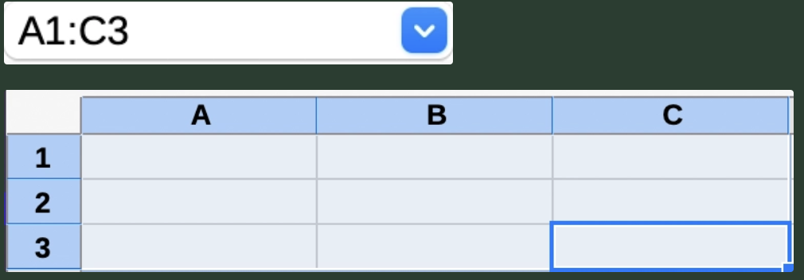
LibreOffice Calc¶
Siga las siguientes instrucciones:
MANTENGA PRESIONADA LA TECLA CTRL, y luego PULSE clic sobre los número impares (desde el número 1 hasta el número 21) de las filas en la hoja de cálculo.
SIN SOLTAR LA TECLA CTRL, ahora PULSE clic sobre las letras de las columnas B, D, F, H y J. De esta manera se pueden seleccionar filas y columnas completas.
En su cuaderno…
¿Qué figura se forma en la hoja de cálculo con la selección de filas y columnas que acaba de hacer?
Realice una captura de pantalla con la figura formada y guarde la imagen en la carpeta de evidencias del periodo actual con el nombre: G1111A04-seleccionCeldas.png
Sin escribir datos en ninguna celda pulse: Ctrl + ↓ y, seguidamente: Ctrl + →.
En su cuaderno…
Escriba la celda a la que llegó (este límite puede variar según la versión del programa utilizada).
Dibuje el siguiente diagrama e identifique las celdas límites esquineras de LibreOffice Calc. El nombre de estas celdas escribirlas en las esquinas superiores del diagrama.
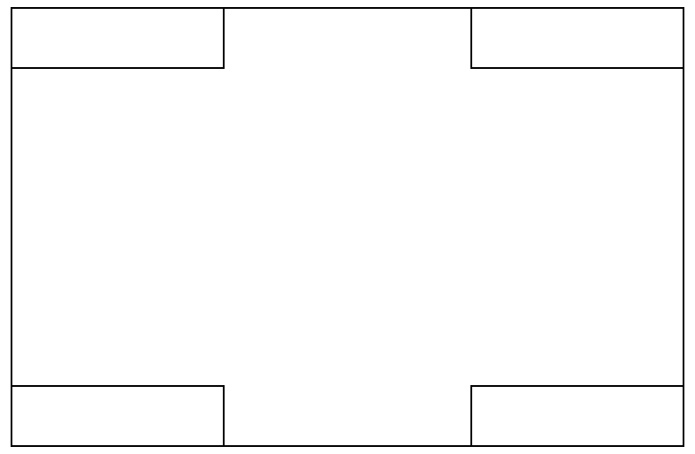
Límites área de trabajo¶
En una hoja de cálculo, hacer clic sobre el cuadro de nombres y escriba J300 y PULSE la tecla ENTER. Compruebe que se ha desplazado hasta la celda J300.
En su cuaderno…
Escriba 5 nombres de celdas y pruebe esta técnica con cada celda escrita.
En el cuadro de nombres escriba la referencia B2:D10 y luego presione la tecla ENTER
En su cuaderno…
¿Que ha ocurrido cuando escribió la referencia B2:D10?
Investigue en Internet los límites de celda en Microsoft Excel.
En su cuaderno…
Compare los límites de celda de Microsoft Excel con LibreOffice Calc y describa que tanto se diferencian.
Cierre el software LibreOffice Calc.
{kind=link}
{kind=link}
A05: Edición básica 003 (5%)¶
Ejecute el software LibreOffice Calc.
Situar el cursor en la celda A1. Hacer clic en el área de edición de la barra de fórmulas. Escriba un texto cualquiera y en la barra de fórmulas pulsar el botón Aplicar [✓].
Situar el cursor en la celda A2. Hacer doble clic en la celda. Escribir un texto cualquiera y pulse la tecla ENTER. Compruebe como automáticamente se desplaza la celda activa a A3.
Desarrolle nuevamente el punto anterior, pero en vez de hacer doble clic en la celda, pulsar la tecla F2.
En su cuaderno…
Responda la siguiente pregunta:
¿Prefiere usted editar el texto en una celda usando F2? o ¿ejecutando doble clic sobre la celda? ¿Por qué?.
Situar el cursor en la celda A1 (que contendrá el texto introducido en el paso 2), comience a escribir un texto cualquiera pero en vez de introducirlo, en la barra de fórmulas pulsar el botón Cancelar [❌].
Desarrolle nuevamente el punto anterior, pero en vez de pulsar el botón Cancelar [❌], PULSE la tecla ESC.
En su cuaderno…
Responda la siguiente pregunta:
¿Prefiere usted cancelar la edición del texto en una celda usando ESC? o ¿pulsando el botón Cancelar [❌]? ¿Por qué?.
Situar el cursor en la celda B1, pulsar el botón Fórmula (el botón tiene forma de
=a la izquierda de la barra de fórmulas) y en el área de edición (a continuación del símbolo igual=) escribir: \(100/3\) y pulsar el botón Aplicar.En su cuaderno…
Con sus palabras, describa lo que acabó de pasar en el documento al desarrollar el punto 7.
Cierre el software LibreOffice Calc.
A06: Gestión de documentos 512 (5%)¶
Actividad práctica
EJECUTE el software LibreOffice Calc.
En el documento, pulse el botón Nuevo de la barra de herramientas Estándar.
En el nuevo documento creado, seleccione Archivo > Nuevo > Hoja de Cálculo
En el último documento creado, pulse la combinación de teclas: CTRL + U
Verifique que tenga cuatro libros nuevos abiertos: Sin título 1, Sin título 2, Sin título 3 y Sin título 4. Los libros organizarlos en forma de cuadrilla en el escritorio (cuadrilla de 4 archivos).
Realice una captura de pantalla y guarde la imagen en la carpeta de evidencias del periodo actual. El nombre de la imagen es: G1111A06-creacionArchivos.png (En la imagen se deben ver los cuatro documentos creados abiertos y la fecha).
En el documento Sin título 1, INTRODUZCA cualquier contenido en algunas celdas.
IDENTIFIQUE el icono de guardar en la barra de herramientas estándar. PULSE el icono de guardar.
GUARDE el documento con el nombre: G1111A06-primerasPracticas.ods en la carpeta de evidencias del periodo actual.
MODIFIQUE el contenido del documento.
Vuelva a GUARDAR el documento pero esta vez en el menú superior PULSAR Archivo > Guardar como… y cambie de nombre a: G1111A06-masPracticas.ods (Guardar el documento en la carpeta de evidencias del periodo actual).
En su cuaderno…
Realizar una descripción relacionada con las formas de crear y guardar documentos.
Guarde los cambios y cierre el software LibreOffice Calc.
Descargue el siguiente archivo y guárdelo en la carpeta de evidencias del periodo actual.
G1111A06-calificaciones.xls Descargar
ABRA el archivo G1111A06-calificaciones.xls con el software LibreOffice Calc.
GUARDE el archivo como Hoja de cálculo ODF manteniendo el nombre original (sólo cambiará la extensión). (Usar Guardar como…)
GUARDE nuevamente el archivo esta vez en formato Texto CSV. (Acepte las opciones por defecto y mantenga el nombre original).
VERIFIQUE que ahora tiene 3 archivos en su carpeta de evidencias así:
G1111A06-calificaciones.xls
G1111A06-calificaciones.ods
G1111A06-calificaciones.csv
En su cuaderno…
Describa las diferencias en el contenido que tengan los 3 archivos.
Guarde los cambios y cierre el software LibreOffice Calc.
A07: Cortar, copiar y pegar 202 (5%)¶
Actividad práctica
Descargue los siguientes archivos y guárdelos en la carpeta de evidencias del periodo actual:
Lea la siguiente información:
Copiar, cortar y pegar en LibreOffice Calc
Para copiar o cortar un rango de celdas, primero seleccionar dicho rango y luego copiar o cortar (según el caso) dicho rango, luego seleccionar la celda destino y después pegar el rango previamente seleccionado.
A continuación se muestran los atajos de teclado universales para estas acciones:
ATAJO
ACCIÓN
CTRL + C
Copiar
CTRL + X
Cortar
CTRL + V
Pegar
CTRL + SHIFT + V
Pegado especial
ABRA el archivo G1111A07-calculo-precios.ods
Seleccione el rango (B6:G17). Luego CORTE y PEGUE dicho rango a la celda A1.
Seleccione el rango (A1:F12) de la hoja Producto 1 y pegar dicho rango en las celdas A1 de las hojas Producto 2 y Producto 3.
Las tres hojas Producto 1, Producto 2 y Producto 3 deberían tener el siguiente aspecto:
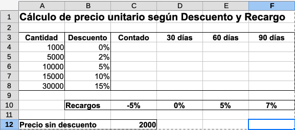
Hoja LibreOffice Calc¶
GUARDE los cambios y CIERRE el documento G1111A07-calculo-precios.ods
ABRA el archivo G1111A07-antiguedad-saldos.ods
En la barra inferior donde están las hojas, PULSAR el botón +, para crear un hoja nueva en el archivo (Hoja2).
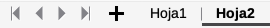
Hojas LibreOffice Calc¶
En la Hoja1 seleccione el rango (A1:E17), luego COPIE y PEGUE el contenido en la celda A1 de la Hoja2.
En su cuaderno…
Responda la siguiente pregunta:
Al momento de pegar el contenido en la Hoja2, ¿Se copio de forma correcta?, ¿Se detallan el nombre de los clientes de forma clara?
En la Hoja2, situar el cursor en medio de las columnas A y B hasta que se forme el ícono de dos flechas opuestas horizontales, luego PULSAR DOBLE CLIC. Al hacer esto, la columna A ahora es de mayor tamaño de tal forma que el nombre de los clientes puede verse claramente.
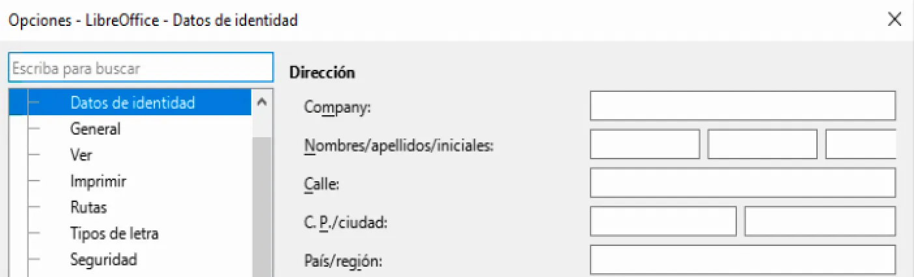
Tamaño automático de celdas¶
En la Hoja2, copiar el rango (A1:E17).
Crear una nueva hoja de nombre: Hoja3
En la Hoja3, en la celda A1 realizar un PEGADO ESPECIAL con el atajo de teclado:
CTRL + SHIFT + V.
Se abrirá la siguiente ventana:
Ventana pegado especial¶
En la ventana Pegado especial, en la sección de Pegar, DESACTIVAR la opciones de:
Números
Fecha y hora
Luego PULSAR el botón Aceptar.
En su cuaderno…
Responda la siguiente pregunta:
¿Qué es un pegado especial y que diferencia hay con un pegado normal?
Guarde los cambios y cierre el software LibreOffice Calc.
{kind=link}
{kind=link}
{kind=link}
{kind=link}
A08: formatos ($, #, 20/08/2020, 0.0) 102 (5%)¶
Actividad práctica
Descargue el siguiente archivo y GUÁRDELO en la carpeta de evidencias del periodo actual:
G1111A08-animales-raza.ods Descargar
Abra el archivo G1111A08-animales-raza.ods y seleccione toda la fila 1 (PULSAR clic izquierdo sobre el número 1 de la fila), luego genere el menú contextual sobre la fila 1 (PULSAR clic derecho sobre el número 1 de la fila). Luego del menú contextual, SELECCIONAR la opción Formato de celdas.
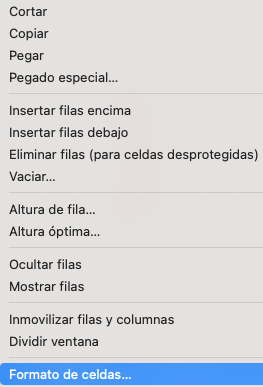
Menú contextual formato de celdas¶
Al hacer esto, se abre la ventana: Formato de celdas
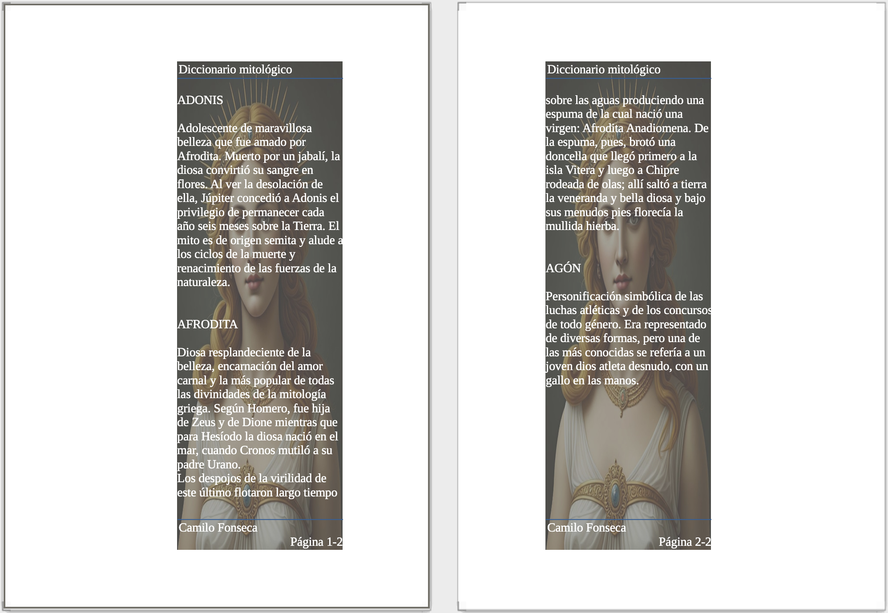
Ventana formato de celdas¶
Configure de la siguiente manera:
En la pestaña Tipo de letra:
Familia: Verdana
Tipofaz: Negrita
Tamaño: 20 pt
En la pestaña Efectos tipográficos:
Color de letra: Púrpura claro 2
Efectos: Sombra
PULSAR Aceptar
SELECCIONE la fila 2 y en Formato de celdas configurar:
Tipo de letra en Negrita cursiva.
SELECCIONE la fila 4 y en Formato de celdas configurar:
Tipo de letra en Negrita, tamaño 11pt.
Efectos tipográficos con color de letra Purpura oscuro 1.
Alineación configurar con Alineación de texto horizontal establecer en Centro y Alineación de texto vertical establecer en Medio.
SELECCIONE los rangos de celdas: A5:A19, E5:E19, H5:H19 y en Formato de celdas configurar:
Alineación Horizontal en Centro.
SELECCIONE el rango de celdas A1:I1 y en la barra de herramientas formato PULSAR el botón Combinar y centra o separa celdas conforme al estado actual.
Al igual que el paso 10, SELECCIONE el rango de celdas: A2:I2, luego combinar y centrar.
SELECCIONE el rango de celdas A1:I1 y en la barra de herramientas formato PULSAR el botón Color de fondo y luego seleccionar: Amarillo
Al igual que el paso 12, SELECCIONE el rango de celdas: A2:I2, luego aplique un color de fondo: Azul
SELECCIONE el rango de celdas A4:I19 y en la barra de herramientas formato PULSAR el botón Bordes y seleccionar Borde exterior. Luego PULSAR el botón Estilos de bordes y seleccionar Discontinuo.
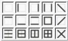
Ventana formato de celdas¶
GUARDE los cambios. El archivo de momento debería tener la siguiente apariencia:
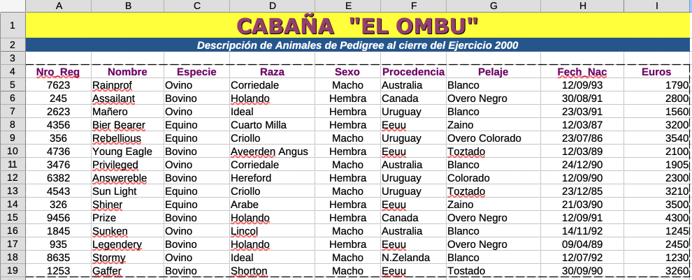
Formato¶
SELECCIONE el rango de celdas: A5:A19 y en la barra de herramientas formato, PULSAR el botón Formatear como número, luego PULSAR dos veces el botón Eliminar decimal.
SELECCIONE el rango de celdas: I5:I19 y en la barra de herramientas formato, PULSAR el botón de opciones del botón Formatear como moneda, luego seleccionar la opción COP $ Español (Colombia).
En su cuaderno…
Responda la siguiente pregunta:
¿Cuántos decimales por defecto tienen los números al dar formato como moneda?

Formato¶
SELECCIONE el rango de celdas: H5:H19 y PULSAR clic derecho de mouse para generar un menú contextual, luego seleccione la opción Formato de celdas…
En la pestaña de Números configurar:
Categoría: Fecha
Formato: 1 de diciembre de 1999
PULSAR el botón Aceptar
Lo más probable es que el contenido de las fechas muestre caracteres ###.
Para que se muestren las fechas, PULSAR doble clic en la línea que separa la columna H con la columna I. Esto hará que las fechas aparezcan nuevamente.
Nuevamente PULSAR clic, pero esta vez en la separación de la columna A y la fila 1. Esto hará que toda la hoja de cálculo sea seleccionada.
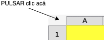
Formato¶
PULSAR doble clic en la línea que separa la columna A con la columna B.
PULSAR doble clic en la línea que separa la fila 1 con la fila 2.
En su cuaderno…
Responda las siguientes preguntas:
¿Que pasó con el tamaño de las filas y las columnas de la hoja de cálculo?
¿Qué posibles problemas se tendrían si no se tiene un tamaño adecuado de las filas y columnas?
¿Qué posibles problemas se tendrían si la información de fechas, números y moneda no están correctamente formateadas?
La apariencia final del documento debería ser la siguiente:
Formato¶
Guarde los cambios y cierre el software LibreOffice Calc.
{kind=link}
{kind=link}
{kind=link}
{kind=link}
{kind=link}
{kind=link}
A09: Buscar, reemplazar, ocultar y rellenar 307 (5%)¶
Actividad práctica
DESCARGUE los siguientes archivos y GUÁRDELOs en la carpeta de evidencias del periodo actual:
ABRA el archivo G1111A09-frutas.ods y PULSE las teclas: CTRL + B para abrir el menú de búsqueda en la parte inferior de la interfaz.
En la barra de búsqueda, escribir el nombre: “kiwi” y PULSAR la opción de Buscar todo. Se abrirá una ventana con los resultados de búsqueda.
En su cuaderno…
Escriba el número de resultados así como también, el nombre de cada una de las tres columnas de dicha ventana.
Cierre la ventana de resultados de búsqueda y en el menú de búsqueda, PULSAR el botón Buscar y reemplazar. Se abrirá la ventana Buscar y reemplazar. En la opción de Buscar escribir Fernandez y en la opción de Reemplazar escribir Fernández. PULSAR el botón Reemplazar todo.
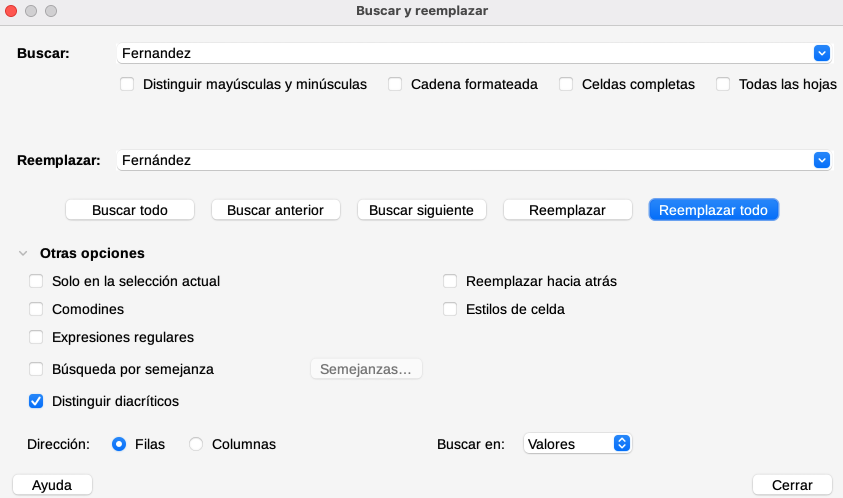
Buscar y reemplazar¶
En su cuaderno…
Escribir el número de resultados encontrados y reemplazados.
Cierre la ventana de Buscar y reemplazar. Realice nuevamente el procedimiento pero esta vez buscar la palabra Catalunya y reemplazar por la palabra Este. También realice la búsqueda de la palabra Andalucía y reemplazar por la palabra Sur.
En su cuaderno…
Escribir el número de resultados encontrados y reemplazados.
Guarde los cambios y abra el documento: G1111A09-ventas-ferreteria.ods.
Seleccione el rango de filas 5 a 7 (Mantenga PULSADA la tecla CTRL). Encima de algún número de las filas seleccionadas (5 a 7), PULSAR clic derecho para generar el menú contextual y seleccionar la opción: Ocultar filas
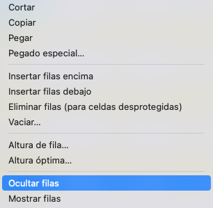
Menú contextual: Ocultar filas¶
Oculte las filas 9 a 11, 13 a 15 y 17 a 19.
En su cuaderno…
Describa la forma final de la tabla y la forma en la que se modificó el contenido.
Guarde los cambios y cree un nuevo documento de nombre: G1111A09-control-gastos-semanales.ods
Agregue el siguiente contenido al documento tal cual como aparece en la siguiente imagen:
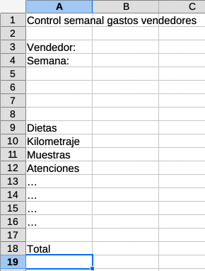
Relleno de celdas¶
En la celda B8 escriba: Lunes
Con la celda B8 seleccionada, atrastre el cuadrado pequeño en la parte inferior derecha de la celda, hasta la celda H8 para rellenar.
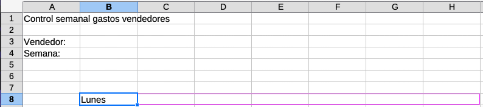
Relleno de celdas¶
En su cuaderno…
Responda la siguiente pregunta:
¿Qué acabo de pasar en las celdas C8, D8, E8, F8, G8 y H8?
En la celda B9, escriba el número: 1. Luego arrastre el cuadrado pequeño hasta la celda H9.
En la celda H10, escriba: 60km. Luego arrastre el cuadrado pequeño hasta la celda B10.
En la celda B11, escriba el mes: enero. Luego arrastre el cuadrado pequeño hasta la celda H11.
En su cuaderno…
En el desarrollo de los puntos 13, 14 y 15 describa que pasó en el documento.
En la celda H12, escriba el número: 1000. Luego SELECCIONE el rango de celdas H12:B12. Después, SELECCIONAR en la barra de menú superior: Hoja > Rellenas celdas > Rellenar series. Se abrirá la ventana Rellenar serie. Configurar así:
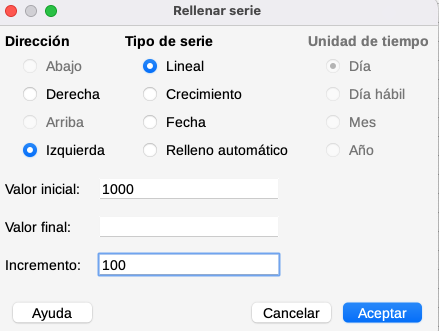
Ventana rellenar serie¶
PULSAR el botón Aceptar.
En su cuaderno…
En su cuaderno responda la siguiente pregunta:
¿Cómo se relleno la serie?
Teniendo en cuenta el desarrollo de las diferentes TAREAS de la presente ACTIVIDAD, configure el documento de tal forma que se vea así:
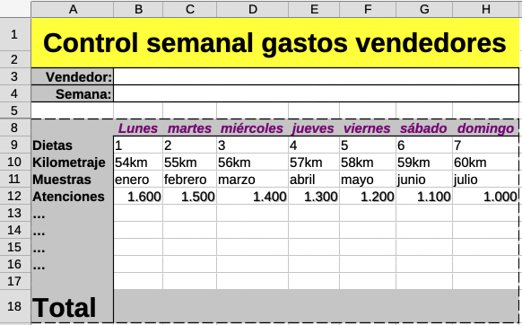
Formato final¶
GUARDE los cambios y CIERRE el software LibreOffice Calc.
{kind=link}
{kind=link}
{kind=link}
{kind=link}
{kind=link}
{kind=link}
A10: Presentación de evidencias (50%)¶
Transferencia
¿Cómo se evalúa?
Los estudiantes presentan lo siguiente:
Carpeta de evidencias con todos los archivos editados en la presente guía. (Los archivos deben estar abiertos).
Cuaderno con las actividades desarrolladas.
El docente realiza unas preguntas para verificación de conocimientos.
El estudiante debe demostrar de forma práctica sus conocimientos en el uso de LibreOffice Calc.